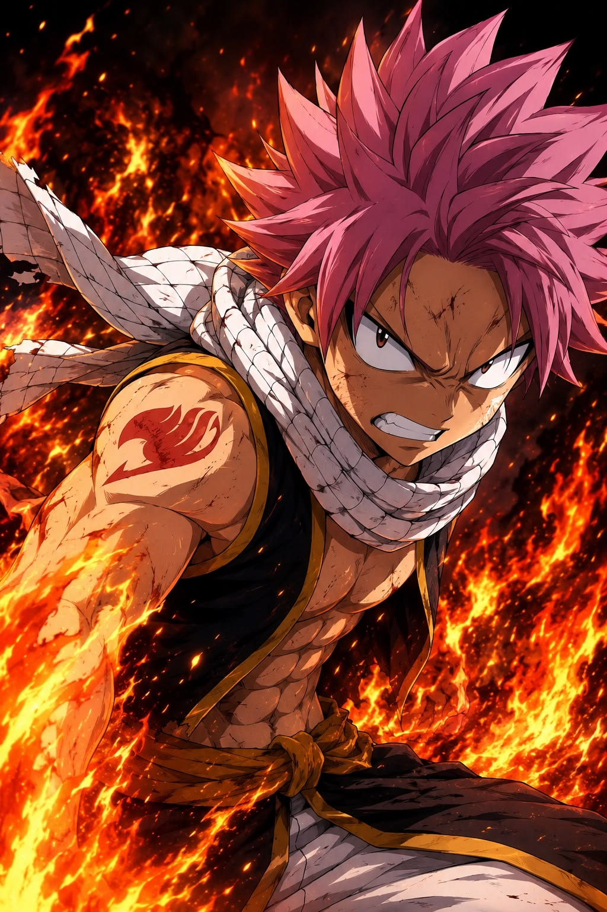
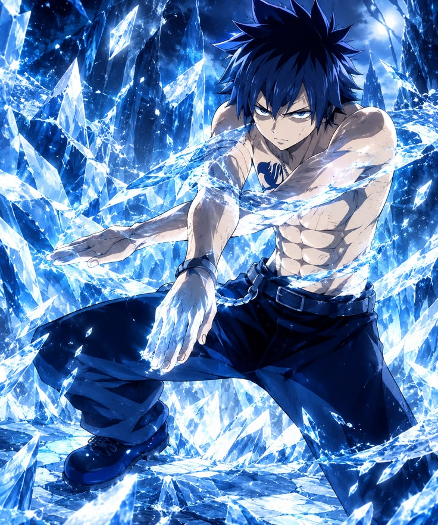
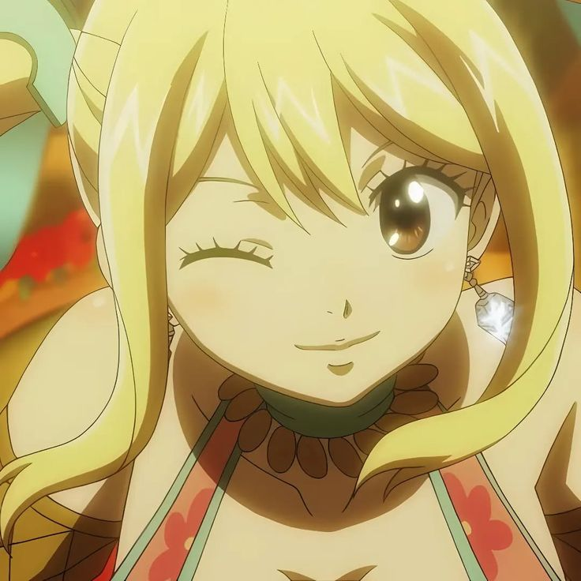
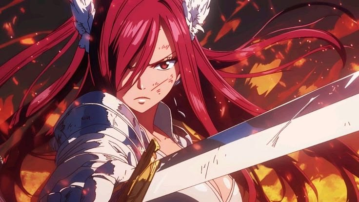
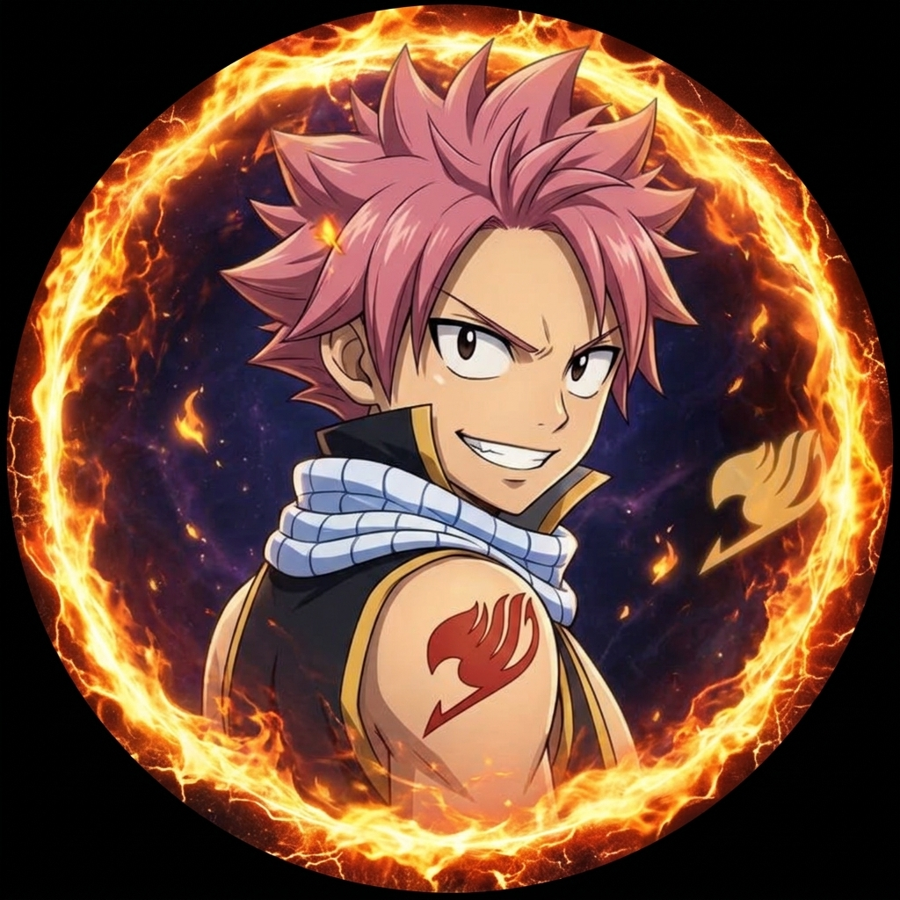
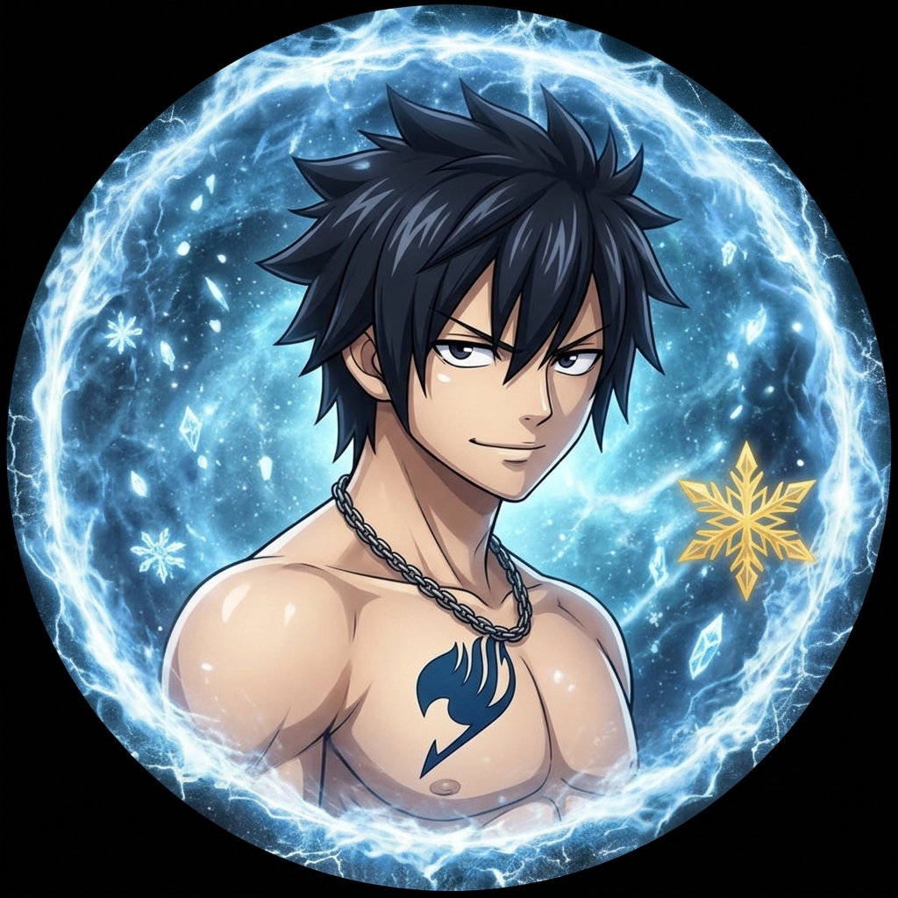
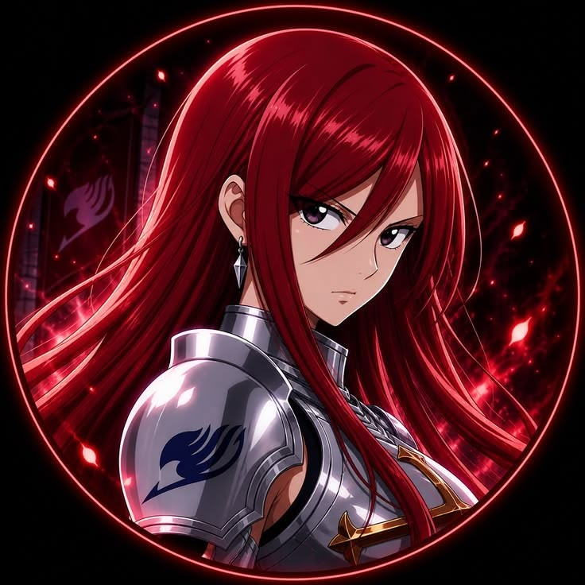

Un mago de fuego del gremio Fairy Tail y también Dragon Slayer. Es impulsivo, valiente y muy leal a sus amigos, aunque sufre de mareos con cualquier medio de transporte. Viaja sin descanso con la esperanza de encontrar a Igneel, el dragón que lo crió.

Un mago de hielo con un carácter frío pero muy protector con su gremio. Tiene la costumbre de quitarse la ropa sin darse cuenta y mantiene una rivalidad constante con Natsu. Su pasado está marcado por la pérdida de su familia y por su maestra Ur, quien le enseñó a usar la magia.
Una maga celestial que huyó de una familia adinerada para cumplir su sueño de unirse a Fairy Tail. Invoca espíritus mediante llaves mágicas y, además de luchar, escribe una novela sobre sus aventuras. Es la compañera inseparable de Natsu y su equipo.

Conocida como "Titania", es una de las magas más poderosas de Fairy Tail. Puede cambiar de armadura y de arma en pleno combate gracias a su magia de reequipamiento. Es seria, disciplinada y firme, pero siempre protege con su vida a sus compañeros.